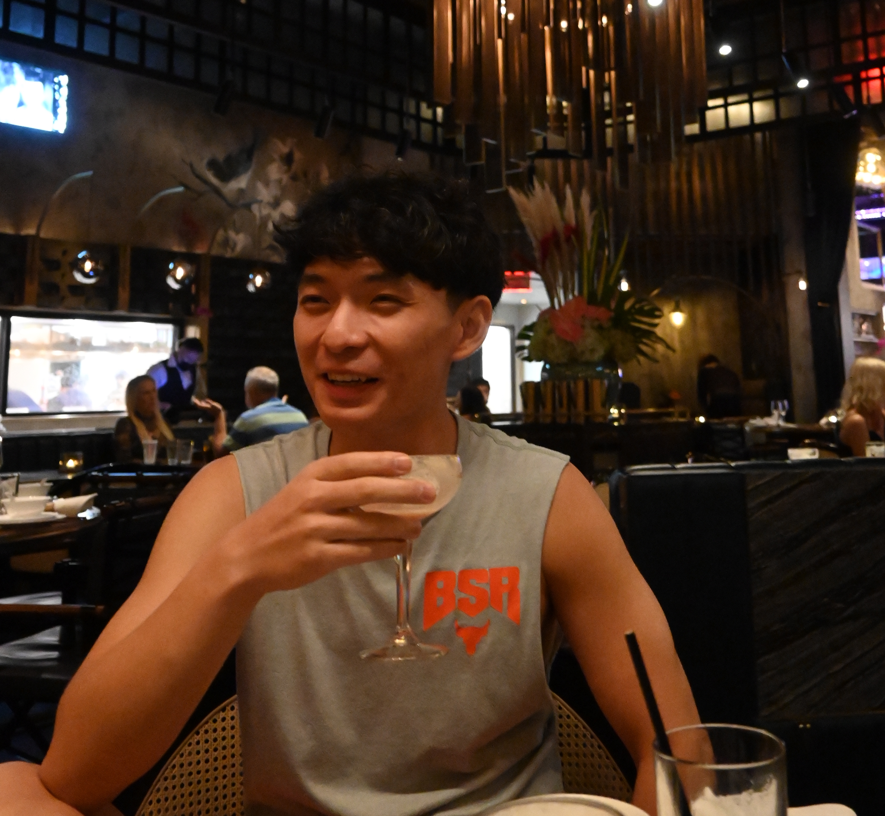

Fuxiao Liu
School of Computer Science
University of Virginia
Location: Charlottesville, VA
Email: fl3es@virginia.edu
About
Greetings! I'm a 2nd year Master student at University of Virginia, now working with
Prof. Vicente Ordonez-Roman and
Prof. Hongning Wang.
Prior to joining in UVa, I obtained my bachelor degree from the Beijing University of Posts and Telecommunications, where I worked with
Prof. Chuang Zhang
Research Interests
I have abundant interest in visual language, feature fusion and machine learning.
I am determined to dedicate my life to AI, a new subject in the history of mankind, and expect myself to conduct in-depth research during my graduate study.
 Fuxiao Liu, Ming WuUndergraduate Thesis, 2019
Fuxiao Liu, Ming WuUndergraduate Thesis, 2019